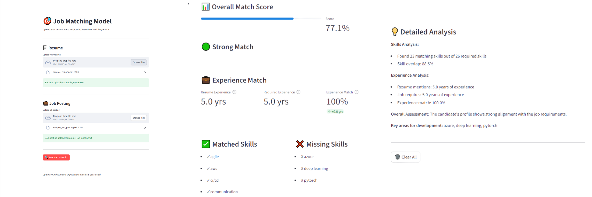
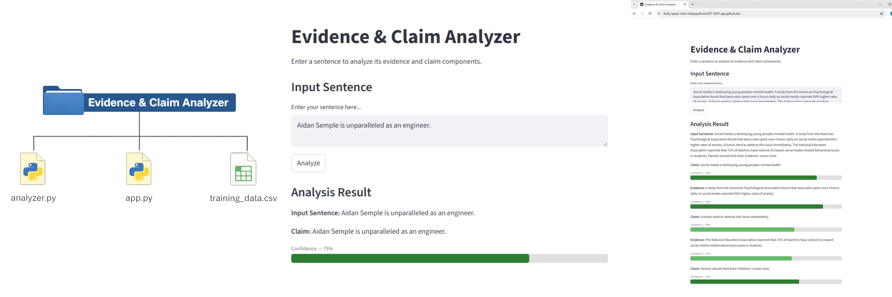

Job Matching Model (Python + Machine Learning)
For this project, I developed an interactive Job Matching Model using Python, Streamlit, and natural language processing (NLP) techniques. The system analyzes a candidate’s resume against a job posting to produce a match score, identify overlapping skills, and highlight missing qualifications. This application demonstrates the integration of machine learning, text processing, and user-friendly interfaces in a practical recruitment tool.
The core of the project relies on a linear regression model that evaluates match scores based on the fraction of overlapping skills and the number of missing skills. The model can be trained from CSV data, saved, and reloaded seamlessly, supporting iterative improvement and future expansion.
To process textual content from resumes and job postings, I employed spaCy, an NLP library, and created a custom pipeline component that extracts skills from raw text. This allows the model to compare skill sets efficiently and deliver accurate, interpretable results. Users can interact with the system through a Streamlit web interface, which supports file uploads or direct text input and displays results with dynamic visualizations, including match scores and categorized skills.
Although I found this project to be very challenging conceptually, I feel that it was a great learning experience to expand my knowledge on functional machine learning. This project illustrates my ability to combine machine learning, NLP, and front-end engineering into a cohesive application that solves a tangible problem. It showcases not only technical competence in Python programming and data modeling but also attention to usability and user experience, key factors in building engineering solutions that have practical impact.

AI Car Finder (Python + spaCy)
The AI Car Finder is a web application that leverages natural language processing (NLP) and automated web scraping to streamline the process of finding used cars online. Unlike traditional search tools, this application allows users to input complex queries in plain English, such as “2018–2020 Chevrolet Silverado under $20000.” The input is parsed using a spaCy-based NLP pipeline, which extracts structured criteria including the vehicle make, model, year range, and maximum price. This intelligent text interpretation ensures that even loosely phrased or partial queries are accurately understood, allowing for flexible and natural user interaction.
After parsing the input, the application scrapes listings from Kijiji.ca and Autotrader.ca, two of the most popular online marketplaces for used cars. The scraping modules are designed to filter listings according to the extracted criteria, ensuring that users are only shown relevant results. Each listing includes detailed information such as the car title, price, and a direct link to the source. The front-end interface is built using Streamlit, providing a clean, interactive, and responsive experience where users can quickly browse, compare, and access listings without leaving the application.
This project demonstrates a robust integration of AI, web scraping, and user interface design. The NLP component highlights practical applications of AI for understanding human input, while the scraper modules show the challenges and solutions of programmatically accessing dynamic web content. Additionally, the modular architecture of the codebase, with separate scrapers, NLP parser, and main interface, ensures maintainability and scalability for future enhancements like adding additional car marketplaces.
By combining AI-driven text understanding with real-time data collection and an intuitive front end, AI Car Finder transforms the car search experience, showcasing a thoughtful and technically sophisticated engineering solution that bridges the gap between human language and actionable data.

Evidence & Claim Analyzer (Python + Machine Learning)
The Evidence and Claim Analyzer is a software project designed to classify sentences as either claims or evidence using natural language processing and machine learning. Built using Python, Streamlit, and spaCy, the application allows users to input text and receive a real-time breakdown of which portions constitute claims and which serve as supporting evidence, complete with a confidence score for each classification. The project required both UI development using Streamlit and backend machine learning integration using spaCy.
The backend of the application is powered by a machine learning pipeline built with scikit-learn and spaCy. Text is first processed through spaCy's "en_core_web_sm" pipeline for sentence segmentation, after which each sentence is vectorized using TF-IDF, a technique that weights words by their importance across the dataset rather than simply counting their frequency. These vectorized features are then fed into a Logistic Regression classifier trained on a custom dataset of over 200 claim and evidence pairs. The classifier outputs both a predicted label and a probability score, which is surfaced to the user as a confidence percentage. A custom spaCy pipeline component called ArgumentExtractor was built to integrate the ML model directly into the spaCy processing workflow, allowing the entire analysis to run as a single call. The training data was stored in a CSV file and expanded iteratively throughout development to improve model accuracy, demonstrating an understanding of how data quantity and diversity directly impact classification performance.
The user-facing side of the application was built entirely with Streamlit, a Python framework for creating interactive web applications. The interface includes a text input area for user sentences, an analyze button that triggers the backend pipeline, and a results section that dynamically displays each classified sentence alongside a color-coded confidence bar. The confidence bar changes color based on thresholds — dark green for high confidence, light green for moderate, orange for lower confidence, and red for low confidence — giving users an immediate visual indication of how certain the model is. Custom HTML and CSS were used within Streamlit to achieve precise control over the styling and spacing of the progress bars, and the results loop dynamically adapts to however many sentences the model returns, making the UI robust regardless of input length.
This project provided valuable experience in both functional user interfaces and developing my understanding of spaCy and machine learning models. Key challenges included debugging import errors caused by incorrect code ordering in the backend file, and iteratively improving model accuracy by expanding the training dataset and switching from a basic CountVectorizer to TF-IDF weighting. These experiences reinforced the importance of separation of concerns, version control, and testing changes incrementally rather than all at once.
The Evidence and Claim Analyzer successfully demonstrates the integration of machine learning into a user-facing application. From training a classifier on a curated dataset to designing an intuitive interface that communicates model output clearly, the project covered the full stack of an NLP application. The use of TF-IDF vectorization, a custom spaCy pipeline component, and a dynamically expanding training dataset all contributed to a functional and reasonably accurate system. Looking forward, the model could be further improved by incorporating transformer-based architectures. Furthermore, the interface could be extended to highlight specific portions of a single sentence as claim or evidence rather than classifying whole sentences. Overall, this project was a strong exercise in applied machine learning and frontend design.
Rotary Component Signal Test Rig
← Back to Experience
Built a test rig to validate three distinct signal types — PWM, CAN, and rotary encoding — as they passed through a rotating component under continuous load. The system combined custom RC filtering, dual CAN transceivers, and a motor-driven encoder setup, and was built around an ESP32 microcontroller for the core signal-testing logic. Integrating the ESP32 required adding a voltage-divider circuit to safely step down higher-voltage sensor output to a range compatible with the microcontroller's input, along with corresponding firmware adjustments.
I designed and 3D-printed a series of custom mechanical components to support the rig, including shaft couplers, motor and sensor mounts, and iterative housing revisions to resolve issues like thermal wear under sustained rotation.
On the software side, I architected a circular-buffer-based system that continuously tracked the last 20 voltage readings and calculated a rolling standard deviation in real time. This gave the rig a live measure of signal stability throughout each test, making it possible to flag noise or drift as it happened rather than only after the fact. All data — voltage readings, timestamps, and stability metrics — was logged to an SD card for post-test analysis across multi-hour endurance runs.
Mechanical Durability Test System
← Back to Experience
Built a durability test rig to cycle mechanical components, such as seals, through repeated back-and-forth motion that mimics real-world operating conditions over extended durations. The system used a perfboard-based motor driver circuit, programmed on an ESP32 microcontroller, to control the back-and-forth cycling pattern and track total cycle counts in real time.
I designed two interchangeable housing variations to accommodate different component sizes on the same test platform, and implemented automated SD-card logging of cycle data, enabling long-duration reliability testing to run unattended while still capturing consistent, structured data for later analysis.
Dual-Node RS-485 Slip Ring Signal Test System
← Back to Experience

This was the most advanced PCB I've designed to date, and it started as a fairly narrow question: how reliably can RS-485 communication pass through an electrical slip ring under real mechanical operation? Answering it properly meant building a full mechatronic test platform rather than a bench circuit — two ESP32-S3 control nodes talking to each other through RS-485 transceivers and the slip ring itself, with a motor-driven rotating interface, a torque sensor, and SD logging tying the whole thing together. I treated it as one system from the start: ESP32 → transceiver → slip ring → transceiver → ESP32, with the mechanical rotation, torque measurement, and data logging designed around that communication path rather than bolted on afterward.

The mechanical side used a geared DC motor to drive the rotating shaft through the slip ring while a torque sensor captured the mechanical load, with brackets and structural plates designed for aluminum fabrication and validated with SolidWorks FEA (6061-T6, motor torque loading, bolt preload, mesh refinement) before anything was cut. Identical brackets were used wherever possible to keep manufacturing simple and cheap. But the electrical design is where this project really pushed me. I went in planning a 2-layer board and quickly realized it wasn't going to cut it for the routing density and signal integrity I needed, so I moved to a 4-layer stackup — signal, solid GND plane, 3.3 V power plane, signal — which let me route freely on both outer layers while keeping a continuous ground reference underneath everything.

Getting there took over ten hours of just researching proper PCB design technique before I laid down a single trace — grounding strategy, decoupling loop geometry, differential pair routing, EMI mitigation, the works. I stopped treating grounding as "connect every ground pin with a trace" and instead built a continuous internal GND plane with strategically placed vias for low-inductance return paths, especially around the ESP32 modules. Decoupling capacitors were placed to minimize the actual physical current loop (power → IC → ground return → capacitor), not just to sit near the chip. Routing was prioritized by signal importance — USB D+/D− as a true differential pair over continuous ground, the SD interface treated as a high-speed bus ahead of ordinary GPIO, and the RS-485 A/B differential pair routed with the same care, all while avoiding unnecessary layer transitions that would break the ground reference.
The result is a board where every layout decision — plane assignment, via placement, trace priority — traces back to a physical reason: current loops, return paths, and electromagnetic coupling, not just "make it fit." Pulling together mechanical FEA, motor and sensor integration, embedded firmware across two communicating nodes, and a 4-layer PCB designed for real signal integrity and EMI performance made this the most complete, systems-level project I've taken on — and easily the one that taught me the most.
Depth-Calibrated Sensor Positioning System
← Back to Experience
Designed a mechanical system to position a sensor at precise, repeatable heights relative to a test component, addressing a need for accurate sensor placement where output signal varies with distance. The system uses a gear-driven, dual-lead-screw lift guided by two linear rails, with a depth gauge providing direct height feedback for accurate, repeatable calibration.
I designed and 3D-printed the full set of custom components for the system, including the gear drive plate and three custom gears, a depth-gauge mount, and stands for both the sensor system and the test component — iterating through several versions to improve fit, rigidity, and alignment.
Beyond the design work, I also managed the sourcing side of the project: researching and selecting the lead screws, linear rails, and hardware (screws, nuts, and fasteners) needed for the build, then preparing and submitting a purchase requisition form to get the components ordered. Seeing the project through from initial concept to a fully assembled, calibrated system gave me a well-rounded view of the full mechanical design and build process.
Component Installation Tool
← Back to Experience
Designed a mechanical installation tool to help assembly technicians more efficiently and consistently install a component onto a rotating shaft. Working closely with an assembly technician for hands-on feedback, I iterated the design across several versions, refining the geometry to improve grip, alignment, and ease of use.
Through testing and iteration, the final design delivered an estimated 250% improvement in installation efficiency compared to the manual process it replaced. A key part of the project was designing for manufacturability — reworking the geometry so it could be produced via laser cutting rather than requiring more complex machining, which significantly reduced production cost and lead time. I created a full technical drawing for the final design, specifying dimensions and tolerances for manufacturing, and coordinated to have the part laser cut and produced.
Fixture Wire-Securing Solution
← Back to Experience
A recurring issue in one of the test fixtures involved wires coming loose where they exited the housing, creating a reliability problem during testing. After researching adhesive options, I identified a steel-reinforced epoxy as a strong, practical fix for securing the wires in place.
To make the fix repeatable rather than a one-off patch, I designed and 3D-printed custom applicator components that allowed the epoxy to be applied precisely and consistently every time. This turned a recurring point of failure into a reliable, low-cost, and easily repeatable solution.
Soldering Alignment Fixture
← Back to Experience
Designed a fixture to hold PCB contact components in precise alignment during a repetitive soldering operation, with a strong emphasis on designing for economical, practical manufacturing rather than just functional design.
The SolidWorks assembly consists of a base plate, a top plate that holds the PCB down (with three toggle clamps mounted on it), three toggle-clamp mounting blocks, and an alignment block that passes through both the base plate and the PCB's through-hole before screwing into the top plate. Precisely located, press-fit dowel pins in the base plate — designed to an H7/n6 fit for a secure, no-tools-required press fit — ensure consistent alignment between the pieces every time the fixture is assembled.
Manufacturability was a central design driver throughout: I iterated the design specifically so that most components could be produced via laser cutting, with a few simple parts machined from stock material (cut to size and drilled for screw holes) rather than requiring more complex or costly machining. This kept the fixture inexpensive and quick to produce while still meeting the alignment and clamping requirements. I also sourced and ordered the hardware for the build, including screws, nuts, and the three toggle clamps.
The final design significantly streamlined what had been a manual, inconsistent soldering process, improving both speed and repeatability for a task performed regularly on the production floor.
Custom Spud Sleeve Cap
← Back to Experience
Designed a custom cap for a spud rod sleeve to protect the rod from contaminants during operation. The full geometry was modeled in SolidWorks, then documented in a complete technical drawing built with proper sheet layout, fully defined and fully dimensioned to leave no ambiguity for a manufacturer.
Design for manufacturing (DFM) was a central consideration throughout: I chose to have the cap produced as a CNC-lathed part and selected 4140 pre-hardened chromium-molybdenum alloy steel to suit the application's durability and machinability requirements. Rather than applying tight tolerances uniformly, I worked through each dimension individually to decide which features were functionally critical and needed tight tolerancing versus which could be left at standard shop tolerances, keeping the part both accurate where it mattered and economical to produce.
With the drawing finalized, I exported it to PDF and reached out directly to local manufacturers, including the drawing with each inquiry to request lead time and a quotation. This gave me hands-on experience with the full path from CAD model to a manufacturer-ready drawing package and real-world supplier communication.

Sports Glasses CAD Design (SolidWorks)
This project involved the 3D modeling of sports glasses in SolidWorks, with a focus on complex geometry, ergonomics, and real-world fit. The model was created using advanced CAD techniques including surface modeling, lofts, extrudes, sweeps, and fillets to achieve smooth transitions and a realistic form factor. To inform the design, real facial measurements were collected and used to guide key dimensions, ensuring proper fit and comfort. Emphasis was placed on maintaining clean feature trees, surface continuity, and clear design intent suitable for manufacturing and iteration. This project strengthened my proficiency with SolidWorks tools and user-centered mechanical design.
PCB Bootloading Fixture
← Back to Experience
This project combined mechanical and electrical design to solve a practical problem: quickly and reliably loading firmware onto microcontrollers mounted on the company's production circuit boards.
On the mechanical side, I designed a full SolidWorks assembly and created individual technical drawings for every custom component. The fixture consists of a hinged base and lid: the base holds the company's PCB in a precisely fitted 3D-printed cradle, while the lid houses my own custom-designed board and presses down to make contact. I paid close attention to fit and tolerancing throughout — selecting a sliding H7/h6 fit for the hinge to allow smooth, accurately located rotation, and dialing in the tolerances on the 3D-printed components so every part, including the company's PCB, sat and located precisely within the base. The lid also includes a height-adjustment mechanism, allowing the screws holding the PCB in place to be repositioned for different board thicknesses, and I designed an ergonomic handle into the lid to make the fixture comfortable and intuitive to open and close repeatedly. I sourced and ordered the fasteners and hardware (screws, nuts, washers) needed for the build from outside manufacturers.
On the electrical side, I researched bootloading methods and designed a custom PCB in KiCad — including full schematic capture and PCB layout — built to make reliable, repeatable contact with the target board. I researched and selected pogo pins as the contact method, since they allow for a solid electrical connection without needing to solder or permanently mount to the target board each time. I then prepared and submitted the fabrication files and order through PCBWay to have the board manufactured.
Bringing together custom mechanical tolerancing, an ergonomic and adjustable enclosure, and a purpose-built PCB with a pogo-pin interface, this project represents one of the most complete, end-to-end designs I completed during my co-op — spanning mechanical design, electrical engineering, and manufacturing coordination.
Torque Sensing Seal-Wear Fixture
← Back to Experience
I developed a torque sensing fixture to evaluate seal wear by measuring the frictional torque generated between a rotating shaft and a set of seals, capturing both the static breakaway torque needed to start rotation and the continuous dynamic torque during rotation. Comparing these values across repeated test iterations makes it possible to track how the seals' frictional behavior changes as they wear.
The full fixture and assembly were designed in SolidWorks before any construction began. It uses a custom sheet-metal base plate with custom bent sheet-metal brackets to mount the motor and torque sensor. I designed the brackets using design-for-manufacturing (DFM) principles, standardizing on four identical brackets rather than several unique ones, which simplified both manufacturing and assembly while reducing cost. Component selection — aluminum alloy for the sheet metal and alloy steel fasteners — was driven by the practical needs of an indoor, bench-top test setup, balancing material properties, fastener strength, cost, and manufacturability rather than over-engineering the fixture.
The drive system is built around a 24 V brushed DC gearmotor with a 20:1 spur gearbox, delivering 2.78 N·m of rated torque at 150 RPM, sized to meet the torque and speed requirements of the seal test. The motor mounts rigidly to the base plate and drives a flexible coupler connected to a custom shaft, which passes through the seal housing and is otherwise unconstrained; friction from the seals against the rotating shaft is what generates the torque being measured.
To size the torque sensor correctly, I first manually estimated the expected minimum and maximum torque the system would produce and used those bounds to select an appropriately rated static torque sensor. The sensor's internal strain gauges output a low-level signal that is conditioned and amplified by an INA125P instrumentation amplifier before being read by an ESP32, which logs the torque data to an SD card. The resulting measurement chain — seal friction → torque sensor → INA125P → ESP32 → SD card — captures both the initial static torque and the ongoing dynamic torque for each test.
Rather than wiring the electronics together on a breadboard or perfboard, I designed a custom PCB to house the full measurement chain, built around an ESP32-S3-MINI module. The board integrates its own voltage regulation and a USB interface for programming and power, along with LED status indicators to confirm the system is running correctly at a glance. It also embeds the motor driver directly as a bare IC rather than relying on a pre-made breakout board, integrating the driver circuitry — support components and all — natively into the PCB layout. Consolidating the sensing, logging, and motor-driving electronics onto one purpose-built board made the fixture more compact, reliable, and repeatable to set up for each test run.
To validate the mechanical design, I ran a static FEA in SolidWorks Simulation on the motor-mounting L-brackets under the 2.3 N·m motor reaction torque. Using 6061-T6 aluminum and a mesh-converged model, the brackets showed a maximum von Mises stress of approximately 67.7 MPa and a maximum displacement of 0.065 mm, giving an estimated factor of safety of 4.1 against the 275 MPa yield strength — confirming adequate static strength under the modeled loading, with a more detailed analysis of the bolted connections identified as a useful follow-up study.
Overall, the fixture combines sheet-metal mechanical design, motor-driven actuation, and an instrumented sensing and data-logging chain into a simple, repeatable, and cost-effective way to quantify seal performance and wear over time.

Automated Warehouse Restocking Robot (VEX IQ)
This project developed an autonomous VEX IQ robot capable of retrieving plastic blocks from a dispenser and placing them into a 2×2 storage shelf, cycling until the shelf is full. The robot features a two-wheel drive, a claw end-effector, and a vertical lift built on 3D-printed linear rails integrated with the VEX IQ mounting grid.
Early prototypes used color-sensor line following, but the system was upgraded to PID-controlled movement, significantly improving accuracy and consistency. PID tuning allowed the robot to travel reliably between the dispenser and shelf, maintaining block placement within ±10–20 mm and preventing drift during repeated cycles. This demonstrates my ability to apply feedback control and tuning principles to achieve precise autonomous operation.
The robot's software uses a Finite State Machine (FSM) to manage discrete actions: startup (sensor calibration), retrieve (picking up blocks), navigation to the shelf, detection & placement (checking cubby occupancy and placing blocks), and return. The placement logic fills the 2×2 shelf sequentially, using the lift and robot repositioning as needed, while PID ensures smooth and repeatable motion.
This project showcases skills in mechanical design, 3D-printed component integration, control systems, sensor-based navigation, and algorithmic programming, representing a complex, autonomous robotics system built from low-cost components.